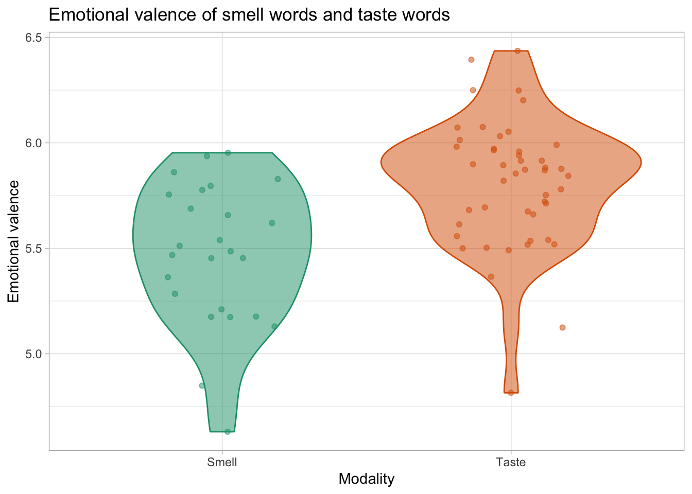
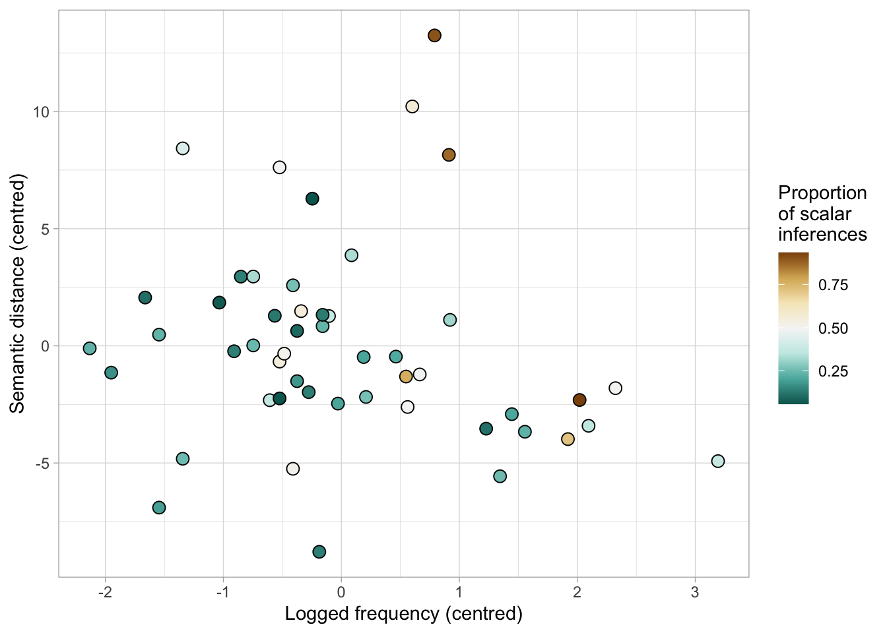

senses_valence <- read_csv("data/senses_valence.csv") %>%
filter(Modality %in% c("Smell", "Taste")) %>%
mutate(Modality = factor(Modality))QML tutorial – Week 11
1 Introduction
In this optional tutorial, you’ll run two linear models in the frequentist style. Both of the models will use data that we’ve encountered in previous weeks. This means that if you’re curious, you can go back to the original Bayesian analyses to see how they compare to the frequentist ones we’ll run today.
But, first things first: set up the Rmd file you’ll use for this tutorial.
Create a new
.Rmdfile, save it incode/, and name ittutorial-w11.In the
setupchunk, include the lineknitr::opts_knit$set(root.dir = here::here()).Also in the
setupchunk, include code to attach the libraries we’ll use in this tutorial:tidyverseas usual, but now two new packages:lme4andlmerTest.
If you don’t already have the packages lme4 and lmerTest installed, then install them now.
2 Modelling continuous outcomes with lm()
For the first part of this tutorial, we’ll be using data we encountered back in Week 5. This is the emotional valence data from Winter (2016). With this data, we’ll look at whether there’s a difference in emotional valence between smell words and taste words.
If you need to download the data again, right-click on the following link: senses_valence.csv (the file is also linked in Course content) and save the file in data/.
Now we are going to fit a model that will tell us whether we can reject the null hypothesis that smell words and taste words have the same emotional valence.
2.1 Prepare data for analysis
Preparing the data is the same, whether we are fitting a Bayesian model or a frequentist one.
Like we did in Week 5, we’ll read in this data and filter it so that we’re only looking at words with modalities of Smell or Taste. We’ll also use mutate() to convert this column into a factor.
Here’s a visualisation of the valence of each Smell and Taste word.

We see that, on the whole, Taste words appear to have slightly higher emotional valence scores than Smell words, but there’s also a fair amount of overlap.
Before we fit the model, we should identify which level of our predictor Modality is the reference level. (This is true for both Bayesian and frequentist modelling.)
Because Modality is a factor, we can use the contrasts() function on it. This function will tell us how each level of Modality is coded—in other words, what numeric representation it receives.
contrasts(senses_valence$Modality) Taste
Smell 0
Taste 1So Smell is the reference level (the first level, the level coded as 0), and Taste is the non-reference level (the second level, the level coded as 1).
This information is all you need in order to tell what the numbers in the model summary are going to mean. What is the meaning of the Intercept going to be? What about the estimate of the slope coefficient, the effect of Modality?
2.2 Fit the model
Here is where things start to get different from what we’re used to.
To fit a Bayesian model, we used the function brm() from the library brms. Now, to fit a frequentist model to continuous outcome data, we use the function lm() from the library lme4.
The notation for the model formula is the same: Valence ~ Modality.
The only other information that lm() needs is the data= argument: the name of the data frame that contains the data we will analyse.
Copy and run the following code that fits the model.
val_lm <- lm(Val ~ Modality,
data = senses_valence)Notice how fast it is to fit a frequentist model!
If you were reporting this model in a paper, you might write something like this.
We fitted a frequentist linear model with a Gaussian distribution. Emotional valence was the outcome variable and modality (smell vs. taste) was the only predictor. Modality was coded with the default treatment contrasts, with “smell” as the reference level.
2.3 Interpret the model output
Let’s have a look at the model’s estimates. Like in previous weeks, we can use the summary() function.
summary(val_lm)
Call:
lm(formula = Val ~ Modality, data = senses_valence)
Residuals:
Min 1Q Median 3Q Max
-0.99315 -0.20870 0.04343 0.19115 0.62788
Coefficients:
Estimate Std. Error t value Pr(>|t|)
(Intercept) 5.47101 0.06297 86.889 < 2e-16 ***
ModalityTaste 0.33711 0.07793 4.326 4.95e-05 ***
---
Signif. codes: 0 '***' 0.001 '**' 0.01 '*' 0.05 '.' 0.1 ' ' 1
Residual standard error: 0.3148 on 70 degrees of freedom
Multiple R-squared: 0.2109, Adjusted R-squared: 0.1997
F-statistic: 18.71 on 1 and 70 DF, p-value: 4.951e-05Let’s focus first on the table under Coefficients:, where there is one row per parameter. What does each column mean?
Estimate: This is the value that the model considers to be the most likely for that parameter.- This is different from a Bayesian model summary. There, this estimate was the posterior mean, and the range of values that the model considered plausible was given by the 95% CrI.
Std. Error: The standard error is how much theEstimatewould vary under hypothetical repeated sampling (i.e., if the exact same experiment were repeated a huge number of times, this is the standard deviation of all of those estimates). The standard error is computed based on the sample size and the standard deviation of the data we’ve observed, and we use it to compute the 95% confidence interval (CI).- This is also different from a Bayesian model summary. There, the second column contained the standard deviation of the posterior distribution. No need to worry about hypothetical repeated sampling.
t value: Student’s t, a measure of how different this estimate is from the null hypothesis. Generally, t-values between –2 and 2 are “close enough” to the null hypothesis, but t-values that are more negative than –2 or more positive than 2 are “unlikely enough” that we are allowed to reject the null hypothesis.Pr(>|t|): The probability of observing a t value more extreme than the one in the previous column. The number of*symbols tells us how statistically significant this p-value is.
Now let’s interpret these results for each parameter. I’ll include the Coefficients: table here again for convenience.
Coefficients:
Estimate Std. Error t value Pr(>|t|)
(Intercept) 5.47101 0.06297 86.889 < 2e-16 ***
ModalityTaste 0.33711 0.07793 4.326 4.95e-05 ***Intercept:
- When
Modality= Smell (the reference level), the model estimates thatValenceis 5.47 (SE = 0.06). - The 95% CI can be computed by adding and subtracting 1.96 \(\times\) SE from the estimate, so:
- Lower bound: 5.47 – (1.96 \(\times\) 0.06) = 5.35
- Upper bound: 5.47 + (1.96 \(\times\) 0.06) = 5.59
- The null hypothesis (H0) that is tested here is that the Intercept is different from 0.
- The t-value of 86.89 is very big.
- And the probability of observing a t-value this extreme or more extreme is miniscule (
2e-16is the smallest number R can handle!). - We therefore reject the null hypothesis that
Valencefor smell words is zero. - Is this an interesting hypothesis to test? Not really… it’s going to be true for most datasets.
ModalityTaste:
- The model estimates that the difference between
Modality= Smell andModality= Taste is 0.34 (SE = 0.08, 95% CI: [0.18, 0.49]). - The null hypothesis (H0) that is tested here is that this difference is not 0.
- The t-value of 4.33 is pretty big.
- And the probability of observing a t-value this extreme or more extreme is
4.95e-05, that is, 0.0000495. Definitely below 0.05! - We therefore reject the null hypothesis that the difference between smell and taste words is zero.
- This is a more interesting hypothesis test, but it doesn’t actually tell us if the difference between smell and taste words is different in the way we’d expect. The effect might be totally backwards from what we hypothesised, but we’d still have to reject the null hypothesis.
Notice that the meanings of the coefficients are still the same. The intercept is still the estimated outcome for the reference level. And the predictor is still the estimated difference between the reference level and the non-reference level.
2.4 The full report
We fitted a frequentist linear model with a Gaussian distribution. Emotional valence was the outcome variable and modality (smell vs. taste) was the only predictor. Modality was coded with the default treatment contrasts, with “smell” as the reference level.
According to the model, smell words have an emotional valence of 5.47 (SE = 0.06, 95% CI: [5.35, 5.59]). The difference between smell words and taste words is 0.34 (SE = 0.08, 95% CI: [0.18, 0.49], p < 0.001).
The intercept being different from zero is such a boring null hypothesis that there’s no need to include the corresponding p-value in the report. But it is typical to report the p-values for the other effects.
3 Modelling binary outcomes with glm()
For the second half of our exploration of frequentist modelling, we’ll reuse data from Week 9 that originally comes from Pankratz and van Tiel (2021). With this data, we’ll model the effects of log frequency, semantic distance, and their interaction on whether or not participants in an experiment drew a scalar inference. Can we reject the null hypotheses that each of these predictors has no effect on the outcome?
If you need to download the data again, right-click on the following link: si.csv (the file is also linked in Course content) and save the file in data/.
3.1 Prepare the data for analysis
We’ll transform the data the same way we did back in Week 9. The following code shows a more streamlined way to do the same four steps that we did last time.
si <- read_csv("data/si.csv") %>%
mutate(
SI = factor(SI, levels = c("no_scalar", "scalar")), # make SI into a factor
logfreq = log(freq), # log the frequency
logfreq_c = logfreq - mean(logfreq), # centre logfreq
semdist_c = semdist - mean(semdist) # centre semdist
)Within one single instance of mutate(), we can create and modify several columns. Notice that we have created a brand new column logfreq, and in the very next line, we have centred it to create logfreq_c! So if you ever have multiple operations that all use mutate(), you can bundle them all together like this.
The last step before running the model: we want to know which level of SI is going to be coded as 1. We can find this out with contrasts(), but for review, I want you to think it through for yourself first.
Before running any code or opening the following drop-down box, decide whether you expect no_scalar or scalar to be coded as 1.
Here’s a plot of this data from Week 9, showing that drawing a scalar inference is mostly associated with high values of both semantic distance and log frequency.
si %>%
group_by(weak_adj) %>%
summarise(
prop_si = mean(as.numeric(SI) - 1),
logfreq_c = mean(logfreq_c),
semdist_c = mean(semdist_c)
) %>%
ggplot(aes(logfreq_c, semdist_c, fill = prop_si)) +
geom_point(size = 3, pch = 21) +
scale_fill_distiller(type = "div") +
labs(
x = 'Logged frequency (centred)',
y = 'Semantic distance (centred)',
fill = 'Proportion\nof scalar\ninferences'
)
3.2 Fit the model
To analyse this binary outcome data, we can’t just use any old linear model. We’re going to need a generalised linear model.
A generalised linear model (often abbreviated as GLM) is what frequentists use whenever the outcome is not Gaussian. Binary data is just one situation where we would need a GLM. Other non-Gaussian outcomes might include count data, proportions between 0 and 1, and so on.
To fit a GLM, we will use the function glm(). It needs the following information:
- The usual kind of model formula that specifies what the outcome and predictors are.
- In
data=, we write the name of the data frame that contains our data. - In
family=, we specify what kind of GLM to fit. But beware, here we writebinomial(link = "logit")instead ofbernoulli().
Copy and run the following code that fits the model.
si_glm <- glm(SI ~ logfreq_c + semdist_c + logfreq_c:semdist_c,
data = si,
family = binomial(link = "logit"))If you were reporting this model in a paper, you might write something like this.
We fitted a frequentist binomial generalised linear model to estimate scalar inferencing as a function of logged word frequency, semantic distance, and their interaction. Both predictors were centred.
Another very common way to refer to this kind of model is to call it a “logistic regression model”. If you prefer that terminology, you could begin your report with:
We fitted a frequentist logistic regression model to estimate…
(Don’t you just love how every concept in statistics has ten different names?)
3.3 Interpret the model output
To see the model output, we can run the following:
summary(si_glm)
Call:
glm(formula = SI ~ logfreq_c + semdist_c + logfreq_c:semdist_c,
family = binomial(link = "logit"), data = si)
Coefficients:
Estimate Std. Error z value Pr(>|z|)
(Intercept) -0.69694 0.05131 -13.583 < 2e-16 ***
logfreq_c 0.52306 0.05083 10.290 < 2e-16 ***
semdist_c 0.08407 0.01248 6.734 1.66e-11 ***
logfreq_c:semdist_c 0.04987 0.01252 3.984 6.77e-05 ***
---
Signif. codes: 0 '***' 0.001 '**' 0.01 '*' 0.05 '.' 0.1 ' ' 1
(Dispersion parameter for binomial family taken to be 1)
Null deviance: 2548.6 on 2005 degrees of freedom
Residual deviance: 2398.2 on 2002 degrees of freedom
AIC: 2406.2
Number of Fisher Scoring iterations: 4Notice that here we have a column called z value instead of t value. For present purposes, the difference is not important and does not affect how we interpret these results.
Let’s break down the interpretation of each coefficient.
- Intercept: When centred log frequency and centred semantic distance are 0 (or in other words, when log frequency and semantic distance are at their means), the log-odds of making a scalar inference are –0.7 (SE = 0.05, 95% CI: [–0.8, –0.6]).
- Note that we again have a very small p-value, so we can reject the null hypothesis that the intercept is zero. But that’s not really an interesting thing to do.
- Like before, we can use
plogis()to back-transform this estimate into a probability:plogis(-0.7)is about 0.33.
- logfreq_c: When centred semantic distance is 0 (i.e., when semantic distance is at its mean), for a unit change in centred log frequency, the log-odds of making a scalar inference changes by 0.52 (SE = 0.05, 95% CI: [0.42, 0.62], p < 0.001).
- We reject the null hypothesis that there is no association between the log-odds of making a scalar inference and the log frequency of the words involved.
- semdist_c: When centred log frequency is 0 (i.e., when log frequency is at its mean), for a unit change in centred semantic distance, the log-odds of making a scalar inference changes by 0.08 (SE = 0.01, 95% CI: [0.06, 0.11], p < 0.001).
- We reject the null hypothesis that there is no association between the log-odds of making a scalar inference and the semantic distance between the words involved.
- logfreq_c:semdist_c:
- Two interpretations, as usual.
- A unit change in centred log frequency is associated with a positive adjustment to the effect of centred semantic distance of 0.05 (SE = 0.01, 95% CI: [0.03, 0.07], p < 0.001).
- A unit change in centred semantic distance is associated with a positive adjustment to the effect of centred log frequency of 0.05 (SE = 0.01, 95% CI: [0.03, 0.07], p < 0.001).
- The null hypothesis thus also has two interpretations.
- We reject the null hypothesis that centred log frequency has no influence on the effect of centred semantic distance.
- Equivalently, we reject the null hypothesis that centred semantic distance has no influence on the effect of centred log frequency.
- Two interpretations, as usual.
3.4 The full report
We fitted a frequentist binomial generalised linear model to estimate scalar inferencing as a function of logged word frequency, semantic distance, and their interaction. Both predictors were centred.
According to the model, when logged frequency and semantic distance are at their means, the probability of drawing a scalar inference is 33% (\(\beta\) = –0.69, SE = 0.05, 95% CI: [–0.8, –0.6]). For each unit increase of logged frequency, when semantic distance is at its mean, the log-odds of drawing a scalar inference increases by 0.52 (SE = 0.05, 95% CI: [0.42, 0.62], p < 0.001). For each unit increase of semantic distance, when logged frequency is at its mean, the log-odds of drawing a scalar inference increases by 0.08 (SE = 0.01, 95% CI: [0.06, 0.11], p < 0.001). The positive effect of logged word frequency increases with increasing semantic distance by 0.05 (SE = 0.01, 95% CI: [0.03, 0.07], p < 0.001).